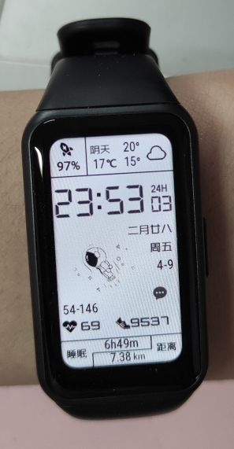
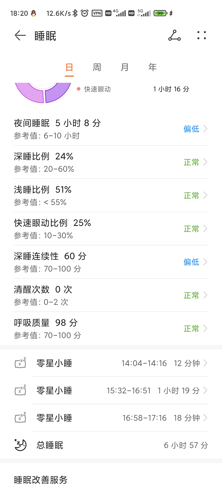

运动手环的使用体验
我想买个运动手环来检测、记录我的睡眠情况。但是小米手环5已经出了很久了，想着买新不买旧，一直在等小米手环6的发布。
结果小米手环6的厚下巴在“跑马屏”下显得十分不和谐，再加上很多人评价说睡眠监测的结果不准确，因此我最终买了荣耀手环6。
屏幕和表盘
先看看外观图。

很多人评价小米手环的窄屏幕才是手环的样子，荣耀手环的宽屏幕已经接近于手表了。但是我作为一个普通用户，并不想管手环和手表的准确定义，我只考虑用起来的实际体验。
荣耀手环的大屏幕真的很有优势，能显示的内容很多。在这个价值￥6的表盘下，常用的数据几乎同时显示了出来。
为什么我要强调这个表盘的价格呢？因为荣耀的表盘市场里免费的表盘真的好少，收费表盘的居多。相比之下，小米手环的免费表盘似乎丰富得多。（云体验，从别人的截图感受到的）
睡眠检测

睡眠检测其实是可以检测到各个睡眠周期的，也就是快速眼动、浅睡眠和深睡眠这三个睡眠周期，截图里没有体现出来。
我没法验证睡眠周期的检测准不准，但是入睡时间的检测我感觉还是准的。
比如截图里有 3 条零星小睡的记录，第一条记录是因为我感冒了，觉得很困，我上课趴着睡觉给检测到了。
这条记录被手环记录下来，我还是蛮震惊的。因为我听说手环检测睡眠的原理是检测手臂的运动，运动的幅度小就认为是睡着了。然而我趴着睡的时候，其实并不稳当，因为我旁边的同学一直在拍桌子，我也一直在晃。
第二条和第三条记录是我逃课回寝室睡的，中途醒来了一次，也被检测到了，分成了两条记录。
运动检测
自动运动检测需要在手环设置里开启，默认是不开启的。开启之后，如果手环检测到你在运动，会弹出提示询问你是否真的在运动。确认之后，就会记录这一次运动。
这里有一个比较人性化的设计。我一开始是不知道还有个确认运动的环节的，我跑步中途才发现手环有这个提示。我本以为确认之前的跑步数据会丢失。没想到的是，手环没有丢掉确认之前的运动数据，我从开始跑步到确认运动的数据都还留着（从里程数能看出来）。
其他
买来手环的前几天，每天起床的第一件事就是看晚上的睡眠质量如何，但是很快就懒得看了。我的睡眠习惯和运动习惯也没因为它变得更好。毕竟手环只是记录，要改变习惯还得看我自己。